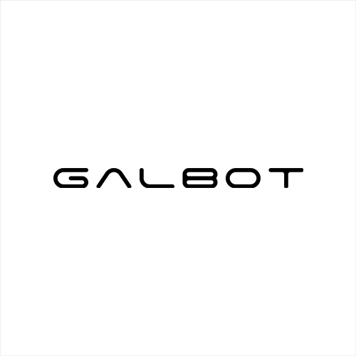

About Me
Hello! I am Huajin Chen (陈华锦), born in 2001. I am currently a Master's student at Zhejiang University, advised by Prof. Qi Ye and Prof. Jiming Chen.
My research focuses on embodied intelligence, with a particular interest in tactile perception and dexterous manipulation. I enjoy exploring the closed loop between hardware design and learning algorithms — from sensor fabrication to policy learning.
Outside of research, I am a video game enthusiast. I have a soft spot for 2D side-scrollers and beautifully crafted indie games.
Education

Zhejiang University
M.S. in Big Data Technology and Engineering
2024 - 2027
Zhejiang University of Technology
B.S. in Information Management and Information Systems
2020 - 2024
Experience

Galbot
Research Intern / Engineer
2026.4 - Present